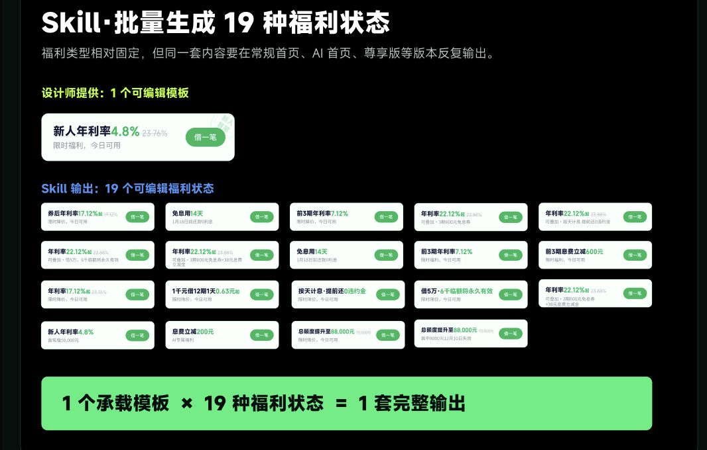
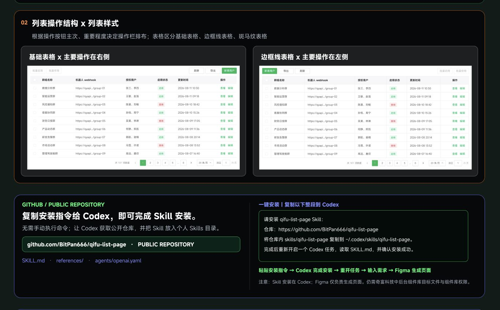
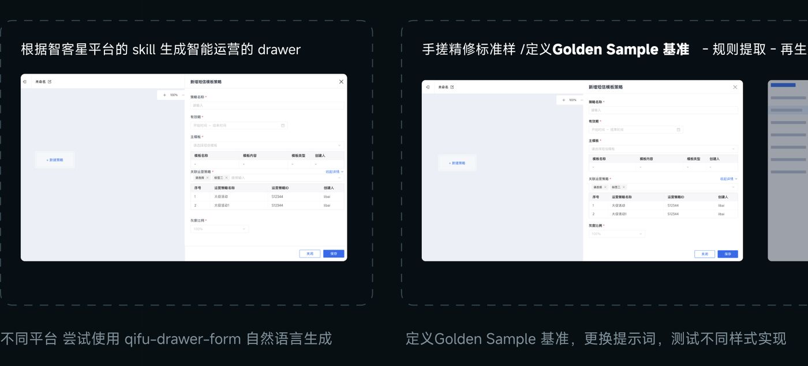

VISUAL / 01
VISUAL / 01视觉设计
超现实品牌场景
生成高质量视觉创意
换一个关键词，或按 Esc 清空搜索。
VISUAL / 01生成高质量视觉创意
 VISUAL / 02
VISUAL / 02生成高质量品牌创意海报
 VISUAL / 03
VISUAL / 03一键生成节日节气主题海报

UI / 04快速生成营销组合模块

UI / 05一键生成列表页结构

UI / 06快速搭建中后台抽屉页
品牌 Logo、品牌规范与视觉标准。
奇富小奇、奇富大富、表情与周边素材。
节日运营、活动模板与品牌图库。
组件样式、布局规则与命名标准。